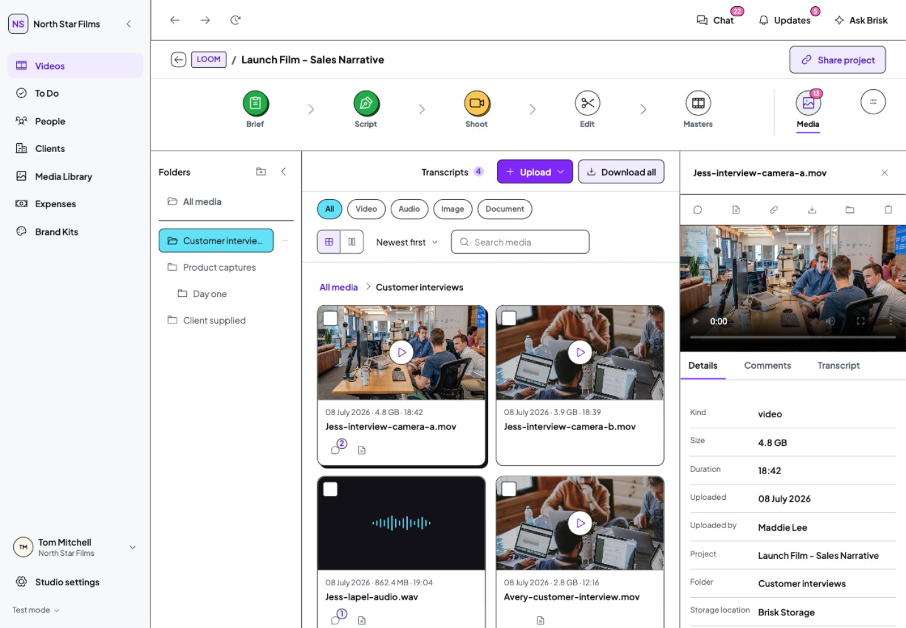
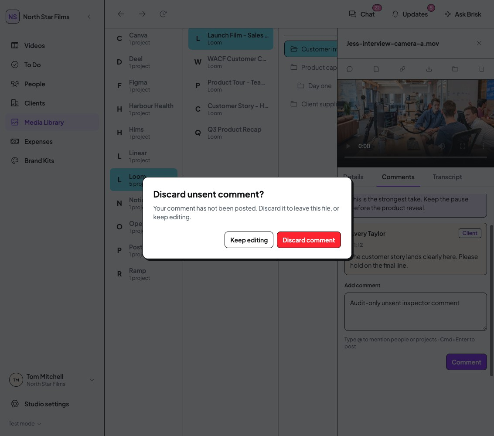

Agreed proposal and original evidence · Desktop audit baseline · Next: To Do time editor proposalImplemented - signed off by Tom
Media inspector: the four agreed changes
The inspector now stays inside the available Media space, docks when files still have enough room, and overlays when they do not. Keyboard entry/exit and unsent-comment protection are implemented. Tom signed off this result on 28 October. The next To Do review is proposal only.
Visible identity and Close
The header stays visible while the panel content scrolls.
Adaptive dock or overlay
Uses actual remaining file space. Navigation does not collapse automatically.
Predictable keyboard actions
Select selects, opening opens, inner Escape takes priority, and closing returns focus.
Context and draft protection
Close retains browsing context. Unsent comments offer Keep editing or Discard comment.
Project Media: docked when there is room
Actual implemented prototype, Studio Staff, 1440px desktop. Two readable file columns remain beside the inspector.

Click any screenshot to open the original at full resolution. These are genuine browser captures, not proposed mockups.
Before and after: narrower desktop
The filename and Close are now below the Media page heading/search and global navigation. The preview and content scroll beneath that header.
Compare the crowded 1440px Library layout
Matched viewport, role, folder and asset. Before Filename is focused; After is resting. This comparison establishes layout and access, not a change to filename focus styling. An overlay deliberately covers browsing while open; it does not make the underlying grid narrower.
Unsent comments stay protected

Close, Escape and switching to another file check for an unsent comment. Keep editing, or Escape from the confirmation, retains the draft. Discard is explicit. Moving between Details and Comments also retains the draft.
Comment text used for these checks existed only in the disposable demo and was never posted.
Scope remains the shared Media inspector and Media card/list entry controls. Browser reload, tab close and unrelated navigation retain their existing prototype behaviour.
Verification and preservation
Type check and route checks passed. Desktop browser checks covered 1440px and 1133px, expanded/collapsed navigation, global/project consumers, all three role variants using permitted existing files, keyboard selection and focus return, nested Escape, draft cancellation/discard, read-only fields and horizontal list position.
Your working browser data was kept separate. Mock data, permission rules, assets, dependencies and DS source are unchanged. No build, tests, installation, commit or push was performed.
The local preview temporarily timed out loading a development script. A fresh asset load and subsequent reload with normal caching rendered successfully. Inspection settings were restored; unused loading frames are excluded from result evidence.
Verification record · Recorded browser states · Implementation register
Signed off by TomTom confirmed the Media inspector looks good on 28 October. Other occurrences of A10 (Shoot progress) and B02 (Transcript paragraphs) remain outside this completed Media pass.
Open the isolated live demo